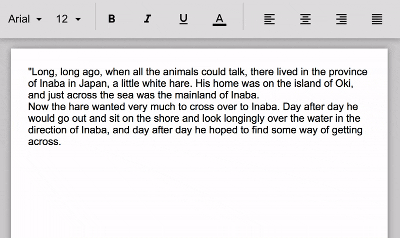

What is Psychic Reader?
Psychic Reader is a chatbot that will convince your friends that she knows everything about them.
They can ask her any question, and she will respond with the correct answer. Secretly, you will use a separate connected device to provide the answers for Psychic Reader. If your friends get suspicious, the connected device will appear to using a normal text editor!
Quick Start
- Register to create a username. You will use the username to connect to your Google Assistant device from a separate device. This will allow you to provide Psychic Reader the answers to all questions she may get asked. You can register by prompting your Google Assistant ("OK Google") and then saying "Talk to Psychic Reader". Psychic Reader will provide steps for registration.
- Prompt Psychic Reader. Once you've registered you are able to prompt Psychic Reader ("Talk to Psychic Reader"), and she will recognize that you have registered. She will tell you her name and prompt your friends to ask her any questions.
- Login on a separate device. You can login here. To login, you will need your username from registration and the name of your Psychic Reader from the previous step. Note that the name of your Psychic Reader will change every time, to prevent strangers from connecting to your Google Assistant. Once you're successfully logged in, you will be redirected to a text editor.
- Provide answers via the editor. Though the text editor appears ordinary at first, you will use it to provide answers to any questions your friends ask the Psychic Reader. By default, the editor is pre-populated with some text, and no matter what you type, the editor will appear to expand out the original text. This provides you the ability to type in secret signals for Psychic Reader, even if your friends are watching. Once Psychic Reader is asked a question, enter one of the below commands into the editor within five seconds.
Key commands to know:
- Type "y" for a "yes" response to a yes/no question.
- Type "n" for a "no" response to a yes/no question.
- Type "." followed by any text response, followed by another "." for a response to an open-ended question. For example, ".you are 16 years old." is a valid command.
Note that if you type something that is not one of these commands into the editor, the editor will still expand out its text, but it will not send a response to the Psychic Reader.

No matter what you type into the editor, you appear to be typing something else!
In short, prompt the app with "Talk to Psychic Reader", login on a separate device using the name that is provided, and then provide answers via the text editor.
Advanced Tips
- You have about 5 seconds after Psychic Reader is asked a question to enter a command into the editor. If Psychic Reader does not receive a command by then, she will provide a vague response to the question, like "I don't think it's best for me to answer that right now".
- You can type a command into the editor a few seconds before Psychic Reader receives a question. If you want to type in a command before your friend is done asking a question, you can do that.
- If you ever lose the login link, just remember that you can go to https://getpsychicreader.com and click the "Already have an account?" link at the bottom.
- You can use the same username to connect to any Google Assistant device connected to your Google Account (phone, Google Home, etc.) You don't have to register twice.
- If you type in "!" into the editor anytime, the editor will go into Disabled Mode, where it suddenly starts acting like a normal text editor: whatever you type will actually appear on the screen, and no commands are sent to Psychic Reader. Type in "!" again to exit Disabled Mode. Disabled Mode is useful if your friends are suspicious about the text editor--just show them!
- Don't use the text editor just to type in commands--your friends will become suspicious. Instead, continually type on the editor while your friends ask questions to Psychic Reader. Avoid the "y", "n", ".", and "!" keys until you actually need to type in a command.
- Open-ended responses can include any alphanumeric characters, spaces (" "), and commas (",").
- You should login while Psychic Reader is introducing herself, but you must use the name she provides. Remember, Psychic Reader's name changes every time!
- When your friends ask you how Psychic Reader is doing it, mumble something generic about voice recognition and AI. Tell them it is connected to Google, and it will all make sense.
- If your friend asks Psychic Reader for help, she will reply automatically with some advice. Don't worry, the trick won't be revealed!
- If you forgot your username, you can ask Psychic Reader to remind you about it anytime. She will tell you your username, but she won't say anything else about the trick.
- If you ask Psychic Reader to repeat what she just said, she will do it.